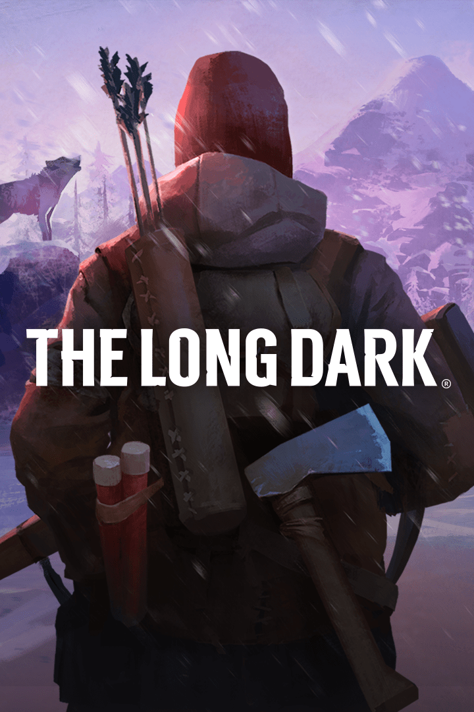

The Long Dark
The Long Dark
Details
|  | |
| Spielzeit | Nicht gespielt |
| Letzte Aktivität | Nie |
| Hinzugefügt | 19.12.2019 |
| Modifiziert | 10.11.2022 14:04:23 |
| Fertigstellungsstatus | Not Played |
| Bibliothek | Steam |
| Quelle | Steam |
| Plattform | PC (Windows) |
| Veröffentlichungsdatum | 01.08.2017 |
| Community Bewertungen | 76 |
| Kritiker Punkte | 81 |
| Benutzerwertung | |
| Genre | Adventure Indie Simulation |
| Entwickler | Hinterland Studio Inc. |
| Verleger | Hinterland Studio Inc. |
| Eigenschaft | Achievements Cloud Saves Controller Support Single Player Steam Karten |
| Links | Community Hub Discussions News Store Page PCGamingWiki Achievements |
| Tag | Achievements Full Controller Support Steam Cloud |
Beschreibung


Bright lights flare across the night sky. The wind rages outside the thin walls of your wooden cabin. A wolf howls in the distance. You look at the meagre supplies in your pack, and wish for the days before the power mysteriously went out. How much longer will you survive?
Welcome to THE LONG DARK, the innovative exploration-survival experience Wired magazine calls "the pinnacle of an entire genre".
The Long Dark is a thoughtful, exploration-survival experience that challenges solo players to think for themselves as they explore an expansive frozen wilderness in the aftermath of a geomagnetic disaster. There are no zombies -- only you, the cold, and all the threats Mother Nature can muster.

The episodic story-mode for The Long Dark, WINTERMUTE, includes two of the five episodes that form its Season One. Both episodes were given a complete overhaul in December 2018, as part of the Redux Update: new mission structure, story beats, dialogue, animations etc.
EPISODE ONE - “Do Not Go Gentle”
Bush pilot Will Mackenzie (player character) and Dr. Astrid Greenwood are separated after their plane crashes deep in the Northern Canadian wilderness in the aftermath of a mysterious flash of light in the sky. Struggling to survive as he desperately searches for Astrid, Mackenzie comes across the small town of Milton, where he begins to understand the scope of this quiet apocalypse.EPISODE TWO - “Luminance Fugue”
Mackenzie’s search for Astrid takes him deeper into the savage Winter wilderness. A mysterious trapper may be the key to finding Astrid, but can he be trusted?EPISODE THREE - "Crossroads Elegy"
In the aftermath of events in Milton, an enigmatic stranger rescues Dr. Astrid Greenwood (player character) from near death. Facing the blizzards of Pleasant Valley, Astrid must bring all her skills as a doctor to bear on the survivors she encounters. But will she find Mackenzie, and get closer to the mystery that's taking them to Perseverance Mills?
The first two episodes of WINTERMUTE represent approximately 15 hours of gameplay. Episodes Three to Five are included in the price of the game, and will be unlocked for free as they are released.
Features performances by Jennifer Hale, Mark Meer, David Hayter, and Elias Toufexis (Episode Three), and the music of Cris Velasco.

Survival Mode is the free-form, non-narrative survival sandbox that has been honed over nearly three years in Early Access.
Survival is your only goal, and death your only end. Make your own survival story with every game.
NO HAND HOLDING
The game challenges players to think for themselves by providing the information but never the answers. You have to earn the right to survive.PERMADEATH
When you die in Survival Mode, your save is deleted. Every decision matters. [Note that WINTERMUTE does not feature permadeath.CONDITION & CALORIES
Monitor your Hunger, Thirst, Fatigue, and Cold as you struggle to balance resources with the energy needed to obtain them. Every action costs Calories, and time is your most precious resource. Choose your path carefully.SCOUR THE WORLD FOR SUPPLIES
Over 100 gear items including Tools, Light Sources, Weapons, First Aid supplies, Clothing, and more.A VAST LIVING WORLD
Explore a 50 square kilometre Northern Canadian wilderness in search of precious supplies. In Winter. Dynamic time of day, weather, wildlife presence, etc. provide just enough randomness to keep things challenging.SURVIVAL OF THE FITTEST
Hunt, fish, trap, climb, map, search for life-saving food and gear items, and try to avoid dying from the hostile wildlife, succumbing to hypothermia, frostbite, or dysentery (amongst other uncomfortable afflictions), find and maintain your life-saving gear. Hunt and be hunted by: Wolves, Bears, Moose, Rabbits, Deers, Crows, and more to come in future updates.CHOOSE YOUR EXPERIENCE
Four distinct Experience Modes let you find a challenge level you are comfortable with, such as Pilgrim Mode, which is meant to be quiet and pensive, all the way to Interloper Mode, where only the most experienced survivors have a chance to last a week. If none of the four Experiences suits you, use Custom Mode settings to tailor your Survival Mode game to your specific tastes.Features the music of Sascha Dikiciyan.

Several standalone Challenge Modes offer objective-based experiences designed to last 1-3 hours each, such as Whiteout -- the race to gather enough supplies to prepare for a monster blizzard. Or Hunted, where you need to escape a murderous Bear. Complete them to unlock Feats that provide long-term gameplay benefits in Survival Mode. Five Challenges exist at launch, with more on the way in future updates.

In addition to releasing the remaining three episodes of WINTERMUTE, we intend to continue updating Survival Mode, as we have done with about 100 updates/hotfixes over the past three years of Early Access. Keep in mind that your purchase of The Long Dark entitles you to all five episodes of WINTERMUTE, as well as updates to Survival Mode along the way.


ABOUT HINTERLAND
Hinterland is a small independent developer of original interactive entertainment. Based in Vancouver, Canada, Hinterland is made up of veterans of the “triple-A” games industry, with lead developers from several renowned studios including Valve, Ubisoft Montreal, Relic, Volition, Capcom, Radical, BioWare, Sony London, and United Front games.info(at)hinterlandgames(dot)com
hinterlandgames.com
thelongdark.com